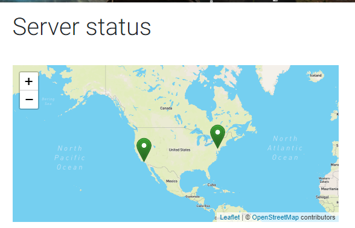
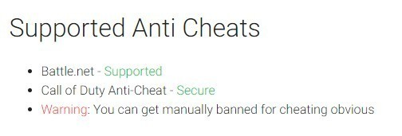

Case 2:22-cv-00051 Document 1 Filed 01/04/22 Page 1 of 24 Page ID #:1
1 MARC E. MAYER (SBN 190969)
mem@msk.com
2 MARK C. HUMPHREY (SBN 291718)
mxh@msk.com
3 GENEVIEVE L. JAVIDZAD (SBN 336138)
glj@msk.com
4 MITCHELL SILBERBERG & KNUPP LLP
2049 Century Park East, 18th Floor
5 Los Angeles, CA 90067-3120
Telephone: (310) 312-2000
6 Facsimile: (310) 312-3100
7 Attorneys for Plaintiff
8
UNITED STATES DISTRICT COURT
9
CENTRAL DISTRICT OF CALIFORNIA
10
11 ACTIVISION PUBLISHING, INC., a CASE NO. 2:22-cv-00051
12 Delaware corporation,
COMPLAINT FOR:
13
Plaintiff,
(1) TRAFFICKING IN
14
v.
CIRCUMVENTION DEVICES;
15 ENGINEOWNING UG, a German
(2) INTENTIONAL
corporation, CMM HOLDINGS S.A., a
INTERFERENCE WITH
16 German corporation, VALENTIN
CONTRACTUAL RELATIONS;
RICK, an individual, LEONARD
17 BUGLA, an individual, LEON
(3) UNFAIR COMPETITION
FRISCH, an individual, IGNACIO
18 GAYDUCHENKO, an individual,
Demand For Jury Trial
MARC-ALEXANDER RICHTS, an
19 individual, ALEXANDER KLEEMAN,
an individual, and DOES 1-50,
20 inclusive,
21
Defendants.
22
23
Activision Publishing, Inc. (“Activision” or “Plaintiff”) alleges as follows:
24
25
PRELIMINARY STATEMENT
26
1.
Activision is the owner and publisher of the Call of Duty series of
27 video games (the “COD Games”). By this lawsuit, Activision seeks to put a stop
Mitchell
28
Silberberg &
to unlawful conduct by an organization that is distributing and selling for profit
Knupp LLP
13821751.1
Case 2:22-cv-00051 Document 1 Filed 01/04/22 Page 2 of 24 Page ID #:2
1 numerous malicious software products designed to enable members of the public to
2 gain unfair competitive advantages (i.e., to cheat) in the COD Games. These
3 ongoing activities damage Activision’s games, its overall business, and the
4 experience of the COD player community.
5
2.
EngineOwning (“EO”) is a commercial online business enterprise
6 consisting of a German business entity and numerous individuals – including
7 without limitation Defendants Valentin Rick, Leonard Bugla, Leon Frisch, Ignacio
8 Gayduchenko, Marc-Alexander Richts, Alexander Kleeman, and several
9 individuals acting under various aliases1 – operating via the website
10 http://www.engineowning.to (the “EO Website”). EO is engaged in the
11 development, sale, distribution, marketing, and exploitation of a portfolio of
12 malicious cheats and hacks for popular online multiplayer games, most
13 prominently the COD Games. Via the EO Website and other related websites and
14 social media accounts, EO and numerous affiliated individuals and resellers sell
15 cheats for numerous COD Games, including without limitation Call of Duty:
16 Warzone, Call of Duty: Modern Warfare (2019), Call of Duty World War II, Call
17 of Duty: Modern Warfare III; Call of Duty Black Ops, Call of Duty Black Ops II,
18 and Call of Duty Black Ops III (collectively, the “Cheating Software”). EO also
19 claims to be developing new cheating software for the popular multiplayer game
20 Overwatch, which is owned and published by Activision’s affiliate, Blizzard
21 Entertainment, Inc. The Cheating Software enables players to manipulate the COD
22 Games to their personal advantage, such as by automatically aiming weapons,
23 revealing the locations of opponents, and allowing the player to see information
24 that is not normally available to players because it would give them an unfair
25 advantage within the game.
26
27
1 EngineOwning and the various individual defendants are referred to hereinafter
Mitchell
28
Silberberg &
collectively as “EO” or “Defendants.”
Knupp LLP
2
13821751.1
Case 2:22-cv-00051 Document 1 Filed 01/04/22 Page 3 of 24 Page ID #:3
1
3.
The COD Games are designed to be enjoyed by and fair for all
2 players. When players use exploits like the Cheating Software, such conduct
3 disturbs game balance and in many cases leads non-cheating players to quit
4 matches in frustration. Widespread cheating also can lead to negative social media
5 posts and headlines in the press, which can impact consumer confidence.
6 Accordingly, Activision has spent and continues to spend an enormous amount of
7 resources to combat cheating in its games. Notwithstanding those efforts,
8 Defendants’ sale and distribution of the Cheating Software has caused Activision
9 to suffer massive and irreparable damage to its goodwill and reputation and to lose
10 substantial revenue.
11
4.
In creating, marketing, selling, servicing, and distributing the
12 Cheating Software, Defendants have engaged in numerous unlawful acts under
13 United States and California law. Defendants have violated Section 1201 of the
14 Digital Millennium Copyright Act (“DMCA”), 17 U.S.C. § 1201(b)(1), by selling,
15 importing, offering, providing, and otherwise trafficking in technologies that
16 circumvent or evade anti-cheat technologies used by Activision to protect the
17 integrity of the COD Games. Defendants also have knowingly, intentionally, and
18 maliciously interfered with and disrupted the contracts Activision has with its
19 customers in the United States, which explicitly prohibit the exact type of cheating
20 that Defendants enable, encourage, and solicit by marketing and selling their
21 Cheating Software. Defendants not only know that their conduct is unlawful, but
22 they engage in that conduct with the deliberate intent to harm Activision, its
23 businesses, and its player community. This Court must put a stop to Defendants’
24 misconduct, and Activision is entitled to monetary damages, injunctive and other
25 equitable relief, and punitive damages against Defendants.
26
27
Mitchell
28
Silberberg &
Knupp LLP
3
13821751.1
Case 2:22-cv-00051 Document 1 Filed 01/04/22 Page 4 of 24 Page ID #:4
1
JURISDICTION AND VENUE
2
5.
This is a civil action seeking damages, injunctive relief, and other
3 equitable relief under the anti-circumvention provisions of the DMCA, 17 U.S.C. §
4 1201, and the laws of the State of California.
5
6.
This Court has subject matter jurisdiction over Activision’s claims for
6 violating the anti-circumvention provisions of the DMCA pursuant to 28 U.S.C. §§
7 1331 and 1338(a). Pursuant to 28 U.S.C. § 1367, this Court has supplemental
8 jurisdiction over Activision’s state law claims for intentional interference with
9 contract and unfair competition, which are so related to Activision’s federal claims
10 as to be part of the same case or controversy.
11
7.
This Court has personal jurisdiction over Defendants because they
12 have purposefully directed their activities at the United States, and at California in
13 particular, have purposefully availed themselves of the benefits of doing business
14 in California, and have established a continuing presence in California. Activision
15 is informed and believes, and on that basis alleges, that, without limitation:
16
(a)
Defendants conduct extensive and ongoing business with users
17 in the State of California and the United States;
18
(b)
Defendants target the Cheating Software to users in the United
19 States, including in the State of California, knowing that a substantial market exists
20 for their Cheating Software in the United States. For example, Defendants display
21 all of the text of their website in “English (US),” offer special sales around U.S.
22 holidays (such as Halloween and Black Friday), and provide customer service in
23 English.
24
(c)
Defendants distribute the Cheating Software in the State of
25 California, advertise and market the Cheating Software in the United States and the
26 State of California, and communicate directly with users in the United States and
27 in the State of California, including for the purposes of soliciting purchases of the
Mitchell
28
Silberberg &
Knupp LLP
4
13821751.1

Case 2:22-cv-00051 Document 1 Filed 01/04/22 Page 5 of 24 Page ID #:5
1 Cheating Software by such users and providing technical support for the Cheating
2 Software;
3
(d)
Defendants have entered into, and continue to enter into,
4 contracts with individuals in the State of California, including contracts pursuant to
5 which these individuals license from Defendants the right to install and use the
6 Cheating Software. In return for such licenses, Defendants receive ongoing
7 recurring daily, weekly, or monthly payments from individuals in the United States
8 and the State of California; and
9
(e)
Defendants contract with entities located in the State of
10 California in connection with their businesses. This includes, for example, domain
11 name registries, hosting or content delivery services, as well as credit card
12 processors and merchant banks. In fact, Defendants boast on their website that
13 they maintain at least two servers in the United States, including one in California:
14
15
16
17
18
19
20
21
22
23
24
(f)
Defendants engage in conduct that they know is likely to cause
25 harm to Activision in the State of California, including in this District, where
26 Activision is located and has its principal place of business.
27
Mitchell
28
Silberberg &
Knupp LLP
5
13821751.1
Case 2:22-cv-00051 Document 1 Filed 01/04/22 Page 6 of 24 Page ID #:6
1
8.
Venue is proper in this District pursuant to 28 U.S.C. § 1391(b)
2 because this is a judicial district in which a substantial part of the events giving rise
3 to the claims occurred, and/or in which Activision’s injuries were suffered.
4
5
THE PARTIES
6
9.
Activision is a corporation duly organized and existing under the laws
7 of the State of Delaware, with its principal place of business in Santa Monica,
8 California.
9
10. Activision is informed and believes, and on that basis alleges, that
10 Defendants CMM Holdings S.A. and EngineOwning Software UG are German
11 business entities headquartered in Pfaffenhofen an der Ilm (collectively, the
12 “Corporate Defendants”). Activision is further informed and believes, and on that
13 basis alleges, that the individual defendants develop, maintain, market, distribute,
14 and sell the Cheating Software (including via the online “chat room” system
15 known as “Discord”), and also operate and maintain the EO Website, through one
16 or more of the Corporate Defendants.
17
11. Activision is informed and believes, and on that basis alleges, that
18 Defendant Valentin Rick a/k/a Skyfail (“Rick”) is an individual residing in
19 Germany who founded the Corporate Defendants, is the sole managing director
20 and shareholder of the Corporate Defendants, and historically has been the primary
21 administrator of the EO Website. Activision is further informed and believes, and
22 on that basis alleges, that Rick has been and continues to be the de facto leader of
23 EO, and in that capacity has directed and/or been responsible for developing,
24 maintaining, marketing, distributing, and selling the Cheating Software. Activision
25 previously contacted Rick in 2018 and 2020 regarding his involvement with EO
26 and the EO Website, and in response he claimed to have sold the EO Website to an
27 unknown purchaser. Rick has never provided any evidence that such a sale took
Mitchell
28 place, and Activision is informed and believes, and on that basis alleges, that Rick
Silberberg &
Knupp LLP
6
13821751.1
Case 2:22-cv-00051 Document 1 Filed 01/04/22 Page 7 of 24 Page ID #:7
1 has continued to manage and operate EO and the EO Website at all times relevant
2 to this lawsuit.
3
12. Activision is informed and believes, and on that basis alleges, that
4 Defendant Leonard Bugla, a/k/a Reganmian and Noodleman (“Bugla”), is an
5 individual residing in Germany who is listed as, and appeared to act as, an
6 operations administrator of the EO Website in 2019 and 2020. Activision is
7 further informed and believes, and on that basis alleges, that in this role Bugla
8 enabled the development, maintenance, distribution, and sale of the Cheating
9 Software. Activision is further informed and believes, and on that basis alleges,
10 that Rick and Bugla have a long-standing personal relationship dating back to
11 before EO and the EO Website were created (i.e., before 2012).
12
13. Activision is informed and believes, and on that basis alleges, that
13 Defendant Leon Frisch a/k/a “Kraisie” (“Frisch”) is an individual residing in
14 Germany who acts as a lead moderator on the EO Website forums. Activision is
15 further informed and believes, and on that basis alleges, that in this role Frisch
16 assists with the sale of the Cheating Software, including without limitation by
17 providing technical support for cheats and communicating with customers
18 regarding payment for the Cheating Software.
19
14. Activision is informed and believes, and on that basis alleges, that
20 Defendant Ignacio Gayduchenko, a/k/a Weather and Kokole (“Gayduchenko”), is
21 an individual residing in Spain who has acted as a coder and developer of the
22 Cheating Software, and who has provided technical support for the Cheating
23 Software through, among other venues, the EO Website.
24
15. Activision is informed and believes, and on that basis alleges, that
25 Defendant Marc-Alexander Richts a/k/a “x0000x” and “Twenty” (“Richts”) is an
26 individual residing in Germany who has been involved with distributing and
27 selling the Cheating Software through EO and the EO Website.
Mitchell
28
Silberberg &
Knupp LLP
7
13821751.1
Case 2:22-cv-00051 Document 1 Filed 01/04/22 Page 8 of 24 Page ID #:8
1
16. Activision is informed and believes, and on that basis alleges, that
2 Alexander Kleemann a/k/a “A200k” (“Kleeman”) is an individual residing in
3 Veitshöchheim, Germany, who has been involved in distributing the Cheating
4 Software and providing various administrative functions with regard to the EO
5 Website.
6
17. Activision is informed and believes, and on that basis alleges, that the
7 following individuals, whose true names are yet unknown, are developers of the
8 Cheating Software, administrators of the EO Website, resellers and distributors of
9 the Cheating Software, and/or otherwise involved in the creation, marketing, and
10 distribution of the Cheating Software: “Bonsai,” “Agriolo,” “Chronos,”
11 “Deutschlander,” “Enceladus,” “Homie,” “Jeuwifghue,” “LogicX,” “LuoZheng,”
12 “mortyy,” “NOL3X,” and “SlapstiK.” These individuals are included as
13 defendants herein as Does 1 through 12.
14
18. Activision is informed and believes, and on that basis alleges, that
15 defendant Doe 13 a/k/a “Crotle” (referred to as “Boss” on the EO Website forums)
16 is a high-level member of EO who has a leadership role within the organization,
17 through which he or she participates and/or assists in the development,
18 maintenance, distribution and sale of the Cheating Software.
19
19. Activision is informed and believes, and on that basis alleges, that
20 Doe 14 a/k/a “Speedi13” and Doe 15 a/k/a “Requi” act or have acted as coders for
21 EO, and in that role have participated and/or assisted in the development,
22 maintenance, distribution and sale of the Cheating Software.
23
20. Activision is informed and believes, and on that basis alleges, that
24 several of the Doe defendants (including without limitation the aforementioned
25 Does 1 through 15) may be aliases of EO staffers, including some of the named
26 Defendants in this case, who have sought to mask their identities after previously
27 being contacted by Activision in connection with their involvement in EO.
Mitchell
28
Silberberg &
Knupp LLP
8
13821751.1
Case 2:22-cv-00051 Document 1 Filed 01/04/22 Page 9 of 24 Page ID #:9
1
21. The true names and capacities, whether individual, corporate,
2 associate, or otherwise, of the Doe defendants are unknown to Activision, which
3 has therefore sued said defendants by such aliases and fictitious names. These
4 defendants include individuals whose real identities are not yet known to
5 Activision, but who are acting in concert with one another, often under the guise of
6 Internet aliases, in committing the unlawful acts alleged herein. Among the Doe
7 defendants are developers, resellers, technical support staff, and other individuals
8 who have participated in the development, sale, and distribution of the Cheating
9 Software. Activision will seek leave to amend this complaint to state their true
10 names and capacities once said defendants’ identities and capacities are
11 ascertained. Activision is informed and believes, and on that basis alleges, that all
12 defendants sued herein are liable to Activision as a result of their participation in
13 all or some of the acts set forth in this complaint. (All of the aforementioned
14 defendants, both the named defendants and the Doe defendants, are referred to
15 herein collectively as “Defendants.”)
16
22. Activision is informed and believes, and on that basis alleges, that at
17 all times mentioned in this complaint, each of the Defendants was the agent of each
18 of the other Defendants and, in doing the things alleged in this complaint, was
19 acting within the course and scope of such agency.
20
21
FACTS APPLICABLE TO ALL CLAIMS
22
23. Activision is the publisher and owner of the COD Games, which
23 consist of over 15 video games released since 2003 on various video game
24 platforms. The COD Games are released annually, with live operations and with
25 additional downloadable content released regularly, and are consistently among the
26 best-selling games in a given year, having sold over 400 million total copies to
27 date. In December 2020, Activision announced that the COD Games generated
Mitchell
28 over $3 billion in net bookings in the prior 12 months.
Silberberg &
Knupp LLP
9
13821751.1
Case 2:22-cv-00051 Document 1 Filed 01/04/22 Page 10 of 24 Page ID #:10
1
24. The COD Games are “first-person shooter” video games that allow
2 players to step into the shoes of soldiers and elite operators in combat throughout
3 history, ranging from World War II to modern day and all the way into the future.
4 Nearly all of the COD Games include single player campaign story modes which
5 place players within a fictional narrative. However, all COD Games include the
6 popular competitive online multiplayer modes, where players join online to play
7 live together in real-time. Each of the COD Games offers as many as a dozen or
8 more different online multiplayer game types, all of which are extremely intense as
9 players compete to earn experience points, increase their rankings and statistics,
10 and acquire various rewards for winning matches and achieving certain goals and
11 objectives.
12
25. The COD Games’ online multiplayer modes are so popular that they
13 have given rise to multiple competitive “esports” leagues and tournaments which
14 attract several million viewers on streaming platforms such as Twitch and
15 YouTube.
16
17
The COD Games’ Business Model
18
26. Given the popularity and replayability of the COD Games’ online
19 multiplayer modes, Activision works very hard to ensure that the COD Games
20 offer consistently compelling player experiences so that customers will remain
21 engaged in the COD Games, continue to play them for sustained periods of time,
22 and be excited about future releases.
23
27. In March 2020, Activision released Call of Duty: Warzone
24 (“Warzone”), a free standalone multiplayer game that is offered to the public
25 without requiring that the customer purchase a copy of any Call of Duty game. In
26 order to play Call of Duty: Warzone, a member of the public must register an
27 account with Activision, download the Call of Duty: Warzone software, and
Mitchell
28 connect to Activision’s online multiplayer servers. Accordingly, the revenue
Silberberg &
Knupp LLP
10
13821751.1
Case 2:22-cv-00051 Document 1 Filed 01/04/22 Page 11 of 24 Page ID #:11
1 Activision generates through Call of Duty: Warzone comes exclusively from sales
2 of “virtual goods” (i.e., weapons, skins, etc.) or seasonal “battle passes” that enable
3 the player to receive in-game rewards for accomplishments within the game.
4
28. Revenue generated by the COD Games in turn helps pay for the
5 enormous cost of updating, improving, maintaining, and serving the COD Games
6 and their competitive online modes. If players perceive that a game is unfair,
7 including because others are cheating or have an unfair advantage, players may
8 grow frustrated with the COD Games, become less interested in playing and
9 supporting them (including by purchasing new games and items) and may even
10 stop playing entirely. Cheating therefore not only harms (and could even destroy)
11 COD player communities, but also impacts Activision’s ability to offer the fast-
12 paced, stable, high-quality online gameplay to which millions of fans have become
13 accustomed.
14
15
Activision’s Efforts To Protect Against Hackers And Cheaters
16
29. Because the COD Games are so popular, unscrupulous individuals
17 and companies such as Defendants frequently seek to exploit the games for their
18 own personal gain and profit by selling cheats, hacks, and other malicious
19 software, knowing full well that they are ruining the experience for other players
20 and harming Activision. For this reason, Activision undertakes significant efforts
21 to protect the integrity of the COD Games through both technical and contractual
22 means.
23
24
Technical Protection
25
30. One way that Activision seeks to protect the COD Games from
26 cheating or unauthorized exploitation, is by developing and employing anti-cheat
27 technologies. These technologies help detect when players are using third party
Mitchell
28 cheating software, and prevents unauthorized access to the COD Games by those
Silberberg &
Knupp LLP
11
13821751.1
Case 2:22-cv-00051 Document 1 Filed 01/04/22 Page 12 of 24 Page ID #:12
1 players. It is not possible to play the COD Games’ online multiplayer modes (or to
2 play Call of Duty: Warzone at all) without installing Activision’s anti-cheat
3 technologies. Activision has been able to identify and ban hundreds of thousands
4 of accounts using cheating software in the COD Games in just over the past year.
5
31. In order for any hack or cheat software to operate, it must be designed
6 to prevent or avoid detection by the anti-cheat software, such as by concealing
7 itself or by disabling the anti-cheat technology. Otherwise, the cheat will be
8 detected and the user will be denied access to the particular game’s online
9 multiplayer, and may be permanently banned from playing the game at all.
10
11
Contractual Protection
12
32. In order to access, download, or play the COD Games, users must
13 create and register accounts with Activision. Upon first playing the COD Games
14 and beginning installation, users must expressly manifest their assent to
15 Activision’s Terms of Use (collectively, the “TOU”) by clicking through. If the
16 user refuses to consent to the TOU, they cannot proceed and play the game.
17
33. The TOU includes a limited license agreement between Activision
18 and its users. Under the TOU, Activision grants to users a “personal, limited, non-
19 exclusive license” to use its games for “non-commercial use,” expressly
20 conditioned upon the user’s compliance with the TOU. Among other provisions,
21 by assenting to the TOU, users expressly agree not to “use, develop, host or
22 distribute cheats, automation software (bots), modded lobbies, hacks, mods or any
23 other unauthorized third-party software” in connection with Activision’s games “or
24 engage in any form of cheating, boosting, or booting.”
25
34. The COD Games’ online multiplayer modes (as well as the entire Call
26 of Duty: Warzone game) are made available to the public through Activision’s
27 proprietary servers and matchmaking systems. It is not possible for a user to
Mitchell
28
Silberberg &
Knupp LLP
12
13821751.1
Case 2:22-cv-00051 Document 1 Filed 01/04/22 Page 13 of 24 Page ID #:13
1 lawfully obtain access to or play the COD Games’ online multiplayer modes (or
2 Call of Duty: Warzone) without expressly consenting to the TOU.
3
4
Defendants And Their Unlawful Conduct
5
35. Activision is informed and believes, and on that basis alleges, that
6 Defendants are engaged in developing, updating, marketing, distributing, selling,
7 and supporting the Cheating Software. At all times relevant herein, Defendants
8 have developed, updated, marketed, distributed, sold, and supported the Cheating
9 Software. They have done so, and continue to do so, via the EO Website, email,
10 and other communication platforms such as Discord.
11
36. The EO Website claims to sell “high quality cheats” based on a belief
12 that “everyone should have the ability to win and enjoy online matches.”
13 Currently, the EO Website offers cheats for Call of Duty: Warzone; Call of Duty:
14 Modern Warfare (2019); Call of Duty World War II; Call of Duty: Modern
15 Warfare 3; Call of Duty Black Ops; Call of Duty Black Ops II; and Call of Duty
16 Black Ops III. Defendants also claim that they intend to release a cheat for the
17 game Overwatch, developed and published by Activision’s affiliate Blizzard
18 Entertainment, Inc.
19
37. Visitors to the EO Website are able to purchase access to the Cheating
20 Software in various bundles for each of the offered COD Games. Access to the
21 cheats is offered in various increments at prices ranging from 4.49€ for three days
22 of access to 19.99€ for thirty days of access, as well as 39.99€ for a full ninety
23 days of access to cheats for Call of Duty: Modern Warfare (2019) and Call of
24 Duty: Warzone. The following “features” are offered for each of the cheats:
25
• Aimbots, which automatically “snap” the cheating player’s aim to an
26
opponent when the opponent is visible onscreen, thereby allowing for
27
quick and precise shots.
Mitchell
28
Silberberg &
Knupp LLP
13
13821751.1
Case 2:22-cv-00051 Document 1 Filed 01/04/22 Page 14 of 24 Page ID #:14
1
• Triggerbots, which cause cheating players to automatically fire their
2
weapon when aiming at another player.
3
• ESP and 2D/3D Radar, which allow the cheating player to visualize
4
opponents within the game in ways that destroy the integrity of the
5
game , such as by allowing the cheater to see other players through
6
walls and other obstacles.
7
• Various methods and exploits designed to avoid detection by anti-
8
cheat software, as well as the ability to hide cheats from video
9
recording software (i.e., in order to prevent cheats from being
10
discovered by other players recording and reviewing gameplay).
11
38. Activision is informed and believes, and on that basis alleges, that in
12 addition to marketing and distributing cheats (including but not limited to the
13 Cheating Software), Defendants provide extensive and ongoing customer support
14 and technical assistance, including through the forums on the EO Website, as well
15 as by other means such as email and Discord.
16
39. Activision is informed and believes, and on that basis alleges, that the
17 Cheating Software has been downloaded and used by players of the COD Games
18 thousands of times by players residing in the United States. Activision also is
19 informed and believes that Defendants have made hundreds of thousands of
20 dollars, or more, from their distribution and sale of the Cheating Software.
21
22
Defendants’ Unlawful Activities
23
40. Activision is informed and believes, and on that basis alleges, that in
24 order for the Cheating Software to operate with the COD Games, the Cheating
25 Software necessarily includes technology that primarily is designed to avoid,
26 bypass, evade, or otherwise circumvent Activision’s anti-cheat technologies.
27 Accordingly, each time Defendants sell a license to the Cheating Software they are
Mitchell
28 trafficking in technology that controls access to the COD Games.
Silberberg &
Knupp LLP
14
13821751.1

Case 2:22-cv-00051 Document 1 Filed 01/04/22 Page 15 of 24 Page ID #:15
1
41. Defendants specifically and aggressively advertise and promote the
2 Cheating Software as having been designed to circumvent Activision’s anti-cheat
3 software. Product listings on the EO Website advertise that the Cheating Software
4 offers “multiple protection layers against anti-cheats.” The listings also include
5 certifications that the cheats will bypass and avoid detection by Activision’s anti-
6 cheat software:
7
8
9
10
11
12 See https://www.engineowning.to/shop/product/21/engineowning-for-call-of-duty-
13 modern-warfare-2019.
14
42. Each time a player uses the Cheating Software to cheat in the COD
15 Games, he or she also violates Activision’s TOU, including those provisions that
16 specifically prohibit players from “us[ing], develop[ing], host[ing] or distribut[ing]
17 cheats, automation software (bots), modded lobbies, hacks, mods or any other
18 unauthorized third-party software” in connection with Activision’s games “or
19 engag[ing] in any form of cheating, boosting, or booting.” Accordingly, Activision
20 is informed and believes, and on that basis alleges, that as a result of Defendants’
21 conduct, at least tens of thousands of breaches of these contracts have occurred.
22
43. Activision is informed and believes, and on that basis alleges, that
23 Defendants are fully aware that the use of the Cheating Software violates the TOU.
24 For example, the EO Website prominently warns users that they can be “manually
25 banned” by Activision for “obvious” cheating. This is a concern for players
26 seeking to use the Cheating Software, because some advantages conferred by the
27 Cheating Software may make player characters do things that appear unnatural or
Mitchell
28 even physically impossible within the world of the game, such as quickly
Silberberg &
Knupp LLP
15
13821751.1
Case 2:22-cv-00051 Document 1 Filed 01/04/22 Page 16 of 24 Page ID #:16
1 “snapping” aim to an opposing player with speed and accuracy beyond what even
2 the most skilled player could achieve. Consequently, the EO Website stresses that
3 the Cheating Software contains features designed to help avoid detection by the
4 naked eye, including “Smooth Aim,” which slows down aim movement to make a
5 player using an Aimbot appear to be moving naturally, and “Fire Delay,” which
6 causes a player using a Triggerbot to wait before automatically shooting.
7
44. The Cheating Software has no purpose or function other than to
8 enable players to violate the TOU by using cheats and exploits. Thus, Defendants’
9 goal is to ensure that their customers continue to receive the benefits of their
10 contracts with Activision while they simultaneously engage in continuing breaches
11 of their obligations under these contracts.
12
45. On multiple occasions over the past few years, Activision has
13 contacted or sought to contact some of the individuals suspected to be involved
14 with EO and demanded that they cease and desist from any further development,
15 maintenance, marketing, distribution, and sale of the Cheating Software.
16 Activision is informed and believes, and on that basis alleges, that the Defendants
17 in this action are and have been fully aware that their conduct violates Activision’s
18 rights but nevertheless have brazenly continued their activities.
19
46. By their conduct, Defendants have caused and continue to cause
20 serious harm to the COD Games and to Activision. Such harm is immediate,
21 massive and irreparable, and includes (but is not limited to) the following:
22
(a)
Defendants irreparably harm the ability of Activision’s
23 legitimate customers to enjoy and participate in the online experiences carefully
24 created by Activision. That, in turn, may cause users to grow dissatisfied with the
25 COD Games, lose interest, and stop playing.
26
(b)
Defendants’ knowing and willful misconduct has forced
27 Activision to expend substantial resources attempting to remediate the damage
Mitchell
28 caused by the Cheating Software. This includes creating and releasing updates to
Silberberg &
Knupp LLP
16
13821751.1
Case 2:22-cv-00051 Document 1 Filed 01/04/22 Page 17 of 24 Page ID #:17
1 the COD Games that counteract the Cheating Software, responding to player
2 complaints, employing personnel to police the games to detect the use of the
3 Cheating Software, and “banning” (i.e., permanently deleting the accounts of)
4 users who are using the Cheating Software.
5
(c)
Defendants’ conduct harms Activision’s reputation and results
6 in the loss of significant customer goodwill.
7
47. Defendants’ conduct has resulted in damage to Activision in an
8 amount to be proven at trial. By Activision’s estimation, such damage may
9 amount to millions of dollars. Unless and until Defendants are preliminarily or
10 permanently enjoined, Activision will continue to suffer severe harm from the
11 Cheating Software.
12
13
COUNT I
14
Trafficking In Circumvention Devices
15
48. Activision re-alleges and incorporates by reference the allegations in
16 paragraphs 1 through 47, as if set forth fully herein.
17
49. The COD Games, including but not limited to their source code and
18 audiovisual game play environments, are copyrighted works.
19
50. Activision has incorporated into the COD Games technological
20 measures that effectively control access to the COD Games, including access to the
21 dynamic audiovisual elements that comprise the game.
22
51. The Cheating Software is comprised of or contains technologies,
23 products, services, devices, components, or parts thereof that primarily are
24 designed or produced for the purpose of circumventing technological measures that
25 effectively control access to the COD Games.
26
52. The Cheating Software (and the portions thereof that circumvent
27 Activision’s anti-cheat technologies) have no commercially significant purpose or
Mitchell
28 use other than to circumvent a technological measure that effectively controls
Silberberg &
Knupp LLP
17
13821751.1
Case 2:22-cv-00051 Document 1 Filed 01/04/22 Page 18 of 24 Page ID #:18
1 access to a copyrighted work and that protects the exclusive rights of a copyright
2 owner.
3
53. Defendants market the Cheating Software in the United States with
4 knowledge of their use to circumvent Activision’s technological access controls.
5
54. As a result of the foregoing, Defendants are offering to the public,
6 providing, importing, or otherwise trafficking in technology that violates 17 U.S.C.
7 § 1201(a)(2).
8
55. Defendants’ acts constituting DMCA violations have been and
9 continue to be performed without the permission, authorization, or consent of
10 Activision.
11
56. Defendants have violated Section 1201 of the DMCA willfully and for
12 private commercial gain.
13
57. Defendants’ conduct has caused damage to Activision and has
14 unjustly enriched Defendants, in an amount to be proven at trial.
15
58. As a result of Defendants’ acts and conduct, Activision has sustained
16 and will continue to sustain substantial, immediate, and irreparable injury, for
17 which there is no adequate remedy at law. Activision is informed and believes,
18 and on that basis alleges, that, unless enjoined and restrained by this Court,
19 Defendants will continue to violate Section 1201 of the DMCA. Activision is
20 entitled to injunctive relief to restrain and enjoin Defendants’ continuing unlawful
21 conduct.
22
59. As a direct and proximate result of Defendants’ conduct, pursuant to
23 17 U.S.C. § 1203(c), Activision is entitled to Defendants’ profits attributable to
24 their violations of 17 U.S.C § 1201.
25
60. Alternatively, Activision is entitled to the maximum statutory
26 damages, pursuant to 17 U.S.C. § 1203(c)(A), in the amount of $2,500 with respect
27 to each violation by Defendants.
Mitchell
28
Silberberg &
Knupp LLP
18
13821751.1
Case 2:22-cv-00051 Document 1 Filed 01/04/22 Page 19 of 24 Page ID #:19
1
61. Activision further is entitled to its attorneys’ fees and full costs
2 pursuant to 17 U.S.C. § 1203(b).
3
4
COUNT II
5
Intentional Interference With Contractual Relations
6
62. Activision re-alleges and incorporates by reference the allegations in
7 paragraphs 1 through 61, as if set forth fully herein.
8
63. As described herein, in order to install and play the COD Games,
9 licensed users in the United States first must assent to Activision’s TOU.
10
64. Activision’s contracts with its users are valid and enforceable.
11
65. Each time a purchaser of the Cheating Software uses the Cheating
12 Software in connection with the COD Games, he or she breaches the TOU.
13 Activision is informed and believes, and on that basis alleges, that thousands of
14 such breaches have taken place by Defendants’ customers.
15
66. Activision is informed and believes, and on that basis alleges, that
16 Defendants are aware of both the existence and specific relevant terms of contracts
17 between Activision and its users in the United States, including the TOU.
18 Specifically, Defendants are aware that the TOU prohibits players from using the
19 Cheating Software and that players are at risk of being banned from the COD
20 Games should they be caught using the Cheating Software. Nevertheless,
21 Defendants intentionally encourage and induce users of the COD Games to
22 purchase and use the Cheating Software, knowing that the use of these products by
23 their customers is a breach of these customers’ contracts with Activision.
24
67. By inducing Activision’s users to breach their contracts with
25 Activision, Defendants have intentionally interfered, and continue to interfere, with
26 the contracts between Activision and its users.
27
68. As a direct and proximate result of Defendants’ actions, Activision
Mitchell
28 has suffered damages in an amount to be proven at trial, including but not limited
Silberberg &
Knupp LLP
19
13821751.1
Case 2:22-cv-00051 Document 1 Filed 01/04/22 Page 20 of 24 Page ID #:20
1 to a loss of goodwill among users of Activision’s games, diversion of Activision’s
2 resources to attempt to detect and prevent the use of the Cheating Software,
3 decreased profits, and a loss of profits from users whose accounts Activision has
4 been terminated for violation of the TOU in the United States.
5
69. As a further result of Defendants’ actions, Defendants have unjustly
6 obtained specifically identifiable property, consisting of all of the proceeds
7 attributable to the sale of the Cheating Software in the United States, and any other
8 products or services that violate any of Activision’s rights, and any additional
9 property traceable to those proceeds. Those proceeds, which are directly
10 attributable to Defendants’ manipulation and misuse of the COD Games and
11 intentional interference with Activision’s contracts, rightfully and equitably belong
12 to Activision.
13
70. Defendants’ intentional interference with the contracts between
14 Activision and its licensed users in the United States entitles Activision to
15 injunctive relief and compensatory damages, the imposition of a constructive trust
16 over Defendants’ wrongfully obtained proceeds, and other available relief.
17
71. Defendants are guilty of oppression, fraud, or malice, and Activision,
18 in addition to its actual damages, by reason thereof, is entitled to recover
19 exemplary and punitive damages against Defendants.
20
21
COUNT III
22
Unfair Competition
23
72. Activision re-alleges and incorporates by reference the allegations in
24 paragraphs 1 through 71, as if set forth fully herein.
25
73. The acts and conduct of Defendants constitute unfair competition in
26 the United States under California Business & Professions Code § 17200 et seq.
27 and under California common law.
Mitchell
28
Silberberg &
Knupp LLP
20
13821751.1
Case 2:22-cv-00051 Document 1 Filed 01/04/22 Page 21 of 24 Page ID #:21
1
74. As a direct and proximate result of Defendants’ unfair competition in
2 the United States, Activision has been damaged, and Defendants have been
3 unjustly enriched, in an amount to be proven at trial for which damages and/or
4 restitution and disgorgement is appropriate. Such damages and/or restitution and
5 disgorgement should include a declaration by this Court that Defendants are
6 constructive trustees for the benefit of Activision, and an order that Defendants
7 convey to Activision the gross receipts received or to be received that are
8 attributable to the sale of the Cheating Software in the United States.
9
75. Defendants are guilty of oppression, fraud or malice, and Activision,
10 in addition to its actual damages, by reason thereof, is entitled to recover
11 exemplary and punitive damages against Defendants.
12
76. As a result of Defendants’ acts and conduct in the United States,
13 Activision has sustained and will continue to sustain substantial, immediate, and
14 irreparable injury, for which there is no adequate remedy at law. Activision is
15 informed and believes, and on that basis alleges, that unless enjoined and
16 restrained by this Court, Defendants will continue to engage in unfair competition.
17 Pursuant to California Business & Professions Code § 17203, Activision is entitled
18 to temporary, preliminary and permanent injunctions prohibiting further acts of
19 unfair competition.
20
21
PRAYER FOR RELIEF
22
WHEREFORE, Activision prays that this Court enter judgment in its favor
23 on each and every claim for relief set forth above and award it relief, including but
24 not limited to an order:
25
1.
Preliminarily and permanently enjoining Defendants, their officers,
26 employees, agents, subsidiaries, representatives, distributors, dealers, members,
27 affiliates, and all persons acting in concert or participation with Defendants from:
Mitchell
28 (i) trafficking in circumvention devices in the United States; (iii) intentionally
Silberberg &
Knupp LLP
21
13821751.1
Case 2:22-cv-00051 Document 1 Filed 01/04/22 Page 22 of 24 Page ID #:22
1 interfering with Activision’s or its affiliates’ contracts with players in the United
2 States; and (iv) engaging in unfair competition in the United States.
3
2.
Requiring Defendants to shut down the Cheating Software, any
4 forthcoming software that allows players to cheat in any game published by
5 Activision or its affiliates, and any colorable copies thereof, hosted at any domain,
6 address, location, or ISP.
7
3.
Requiring Defendants to deliver to Activision all copies of materials
8 that infringe or violate any of Activision’s rights, as described herein, including,
9 without limitation, the source code for the Cheating Software.
10
4.
Requiring Defendants to provide Activision with an accounting of any
11 and all sales of products or services in the United States that infringe or violate any
12 of Activision’s or affiliates’ rights, as described herein.
13
5.
Awarding Activision actual or maximum statutory damages for
14 violation of Section 1201 of the DMCA, as appropriate, pursuant to 17 U.S.C. §
15 1203(c).
16
6.
Awarding Activision its full costs and attorneys’ fees in this action
17 pursuant to 17 U.S.C. § 1203(b) and other applicable laws.
18
7.
Awarding Activision exemplary and punitive damages against
19 Defendants on Activision’s cause of action for intentional interference with
20 contractual relations.
21
8.
Awarding Activision restitution of Defendants’ unlawful proceeds,
22 including an accounting of any and all sales of the Cheating Software in the United
23 States, and/or any other products or services that violate any of Activision’s rights
24 described herein.
25
9.
Imposing a constructive trust over the proceeds unjustly obtained by
26 Defendants through the sales of the Cheating Software in the United States, and/or
27 any other products or services that violate any of Activision’s rights described
Mitchell
28 herein.
Silberberg &
Knupp LLP
22
13821751.1
Case 2:22-cv-00051 Document 1 Filed 01/04/22 Page 23 of 24 Page ID #:23
1
10. Awarding such other and further relief as this Court may deem just
2 and appropriate.
3 DATED: January 4, 2022
MARC E. MAYER
MARK C. HUMPHREY
4
GENEVIEVE L. JAVIDZAD
MITCHELL SILBERBERG & KNUPP LLP
5
6
By: /s/ Marc E. Mayer
7
Marc E. Mayer (SBN 190969)
Attorneys for Plaintiff
8
9
10
11
12
13
14
15
16
17
18
19
20
21
22
23
24
25
26
27
Mitchell
28
Silberberg &
Knupp LLP
23
13821751.1
Case 2:22-cv-00051 Document 1 Filed 01/04/22 Page 24 of 24 Page ID #:24
1
JURY DEMAND
2
Activision demands a trial by jury on all issues so triable.
3
4 DATED: January 4, 2022
MARC E. MAYER
MARK C. HUMPHREY
5
GENEVIEVE L. JAVIDZAD
MITCHELL SILBERBERG & KNUPP LLP
6
7
By: /s/ Marc E. Mayer
Marc E. Mayer (SBN 190969)
8
Attorneys for Plaintiff
9
10
11
12
13
14
15
16
17
18
19
20
21
22
23
24
25
26
27
Mitchell
28
Silberberg &
Knupp LLP
24
13821751.1